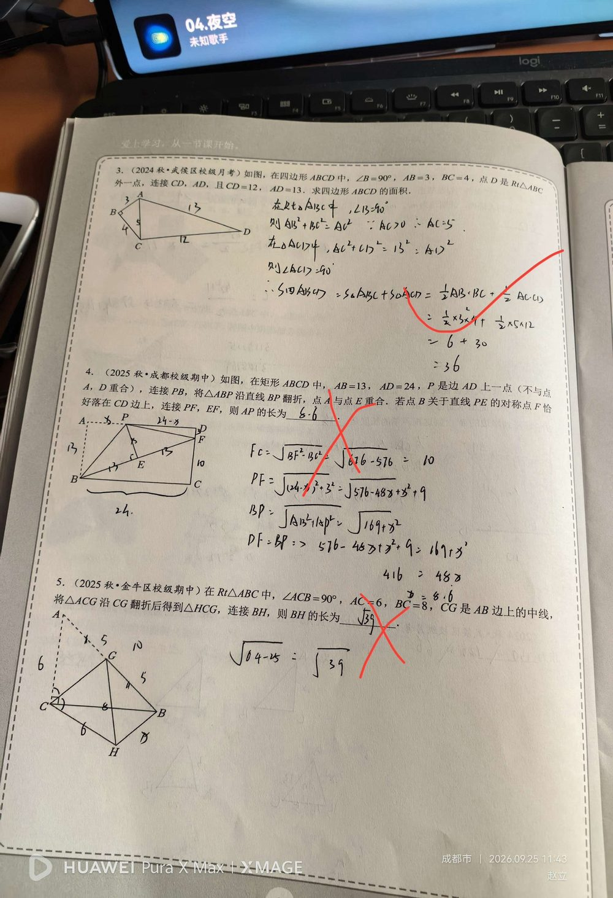

① 矩形 ABCD，AB = 13，AD = 24；② P 在边 AD 上；③ 将 △ABP 沿 BP 翻折，A 的对应点为 E；④ 点 B 关于直线 PE 的对称点为 F，且 F 恰好落在 CD 边上。
求 AP 的长。（若琳写 6.6，红笔判错；正确答案 26/3 ≈ 8.67）
【第一步：翻折能给出什么】 ① △ABP 沿 BP 翻折 ⇒ △ABP ≌ △EBP ⇒ EB = AB = 13，EP = AP，∠PEB = ∠PAB = 90°； ② B 关于 PE 的对称点为 F ⇒ PE 垂直平分 BF ⇒ 「PF = PB」，「EF = EB = 13」，∠PEF = 90°。 【第二步：发现三点共线】 由 ① ② 得 ∠PEB = ∠PEF = 90°，且都在 E 处、PE 同侧 ⇒ 「E、B、F 三点共线」； 又 EF = EB = 13 ⇒ 「E 是 BF 的中点」，即 PE 是 BF 的垂直平分线。 【第三步：用坐标/勾股列方程】 设 AP = x，以 A 为原点、AB 方向为 x 轴建立坐标：B(13, 0)，P(0, x)，F 在 CD 上 ⇒ F = (f, 24)； ① 由 PF = PB：f² + (24 − x)² = 13² + x² ⇒ f² − 48x + 407 = 0 …(a) ② 由「PB 是 AE 的垂直平分线」（A 与 E 关于 PB 对称）：AE ⊥ PB ⇒ 13(13 + f) = 24x …(b) （E 的坐标 = ((13+f)/2, 12)，因为 E 是 BF 中点） ③ 联立 (a)(b)：由 (b) 得 x = (169 + 13f)/24，代入 (a) 化简得 f² − 26f + 69 = 0 ⇒ f = 3 或 f = 23； 因 F 在 CD 上（0 ≤ f ≤ 13），取 「f = 3」； ④ 代回：AP = x = (169 + 13×3)/24 = 208/24 = 「26/3 ≈ 8.67」。
① 只知道「翻折 ⇒ 对应边相等、对应角相等」，漏掉第二次对称给出的 PF = PB、EF = EB； ② 看不出 ∠PEB 与 ∠PEF 都是 90° ⇒ 得不到 E、B、F 三点共线（这一步是本题的关键突破口）； ③ 设元后忘记 P 在 AD 上意味着 PD = 24 − x（容易写成 x）； ④ 解出 f = 3 与 f = 23 后不检验 F 是否在 CD 上（把 23 也留下）； ⑤ 若琳算到 x = 416/48 后抄成 6.6（应为 26/3 ≈ 8.67）—— 属于最后一步抄写错误，非常可惜。
① 轴对称（翻折）的性质：对应线段相等、对应角相等、对称轴垂直平分对应点连线； ② 由两个 90° 角推出三点共线（几何直观）； ③ 勾股定理建模 + 方程思想（设 AP = x 列方程）； ④ 坐标法处理复杂折叠问题； ⑤ 解出多解后按图形位置检验取舍。 📌 出处：第二讲 勾股定理综合复习 第4题。同页第3题（四边形面积 36）答对，未录入。